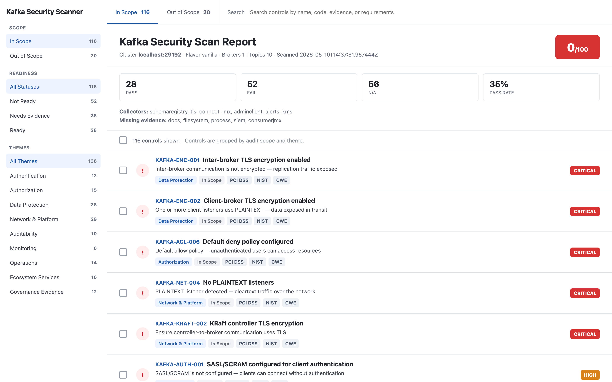

kafka-security-scanner Audit Kafka like your auditor would.
Open-source security and reliability scanner for Apache Kafka and anything that speaks the protocol. Point it at a bootstrap server. Get back a graded report — SARIF for CI, HTML for stakeholders, PDF for sign-off — with every finding mapped to PCI-DSS, SOC 2, ISO 27001, NIST 800-53 and CWE.

Findings that show up the day after the incident.
The controls below are real entries from the catalogue. Each one evaluates to a boolean against collected data — there is no "attestation" status. None of them require a code change.
PLAINTEXT listener detected
A listener answers in cleartext. Anyone who reaches the port can produce, consume or
fetch metadata without credentials. AdminClient says SSL on the config
line; the TLS collector handshake confirms what the broker actually serves — drift trips the
&&.
Inter-broker traffic is not encrypted
security.inter.broker.protocol=PLAINTEXT. Replication, controller election
and KRaft votes travel as cleartext across the network — VPC peering, on-prem switches,
hosted runners, all of it.
Default allow on unauthenticated principals
ACL authorizer is on, but the broker falls back to permitting any request that doesn't match. One missing entry and the cluster is effectively open.
Audit log layout omits principal
Filesystem collector parsed log4j.properties: the layout doesn't carry the
authenticated principal or client identity. Auditors can't trace who did what.
Cleartext credentials in connect configs
Connector configs hold real secrets instead of ${vault:...} or
${aws:...} placeholders. Anyone with REST read can exfiltrate.
Broker certificate expires soon
TLS collector handshake reads the leaf cert. Expiry inside the renewal window — renew before partitions go dark.
Consumer lag is not monitored
Prometheus collector pulled the rule files. No alert ever fires on
kafka_consumer_lag — a stuck consumer is invisible until the topic blows up.
Collectors. Snapshot. CEL. Reports.
Every collector runs on its own virtual thread and adds a slice to a single in-memory
snapshot. Controls are CEL expressions over that snapshot. No silent passes:
if a control needs data that no collector provided, the engine returns na.
-
✓
Collectors are pluggable. Implement
Collectorbehind a flag, expose its data to CEL, write controls withrequires: [your-collector]. No core changes. -
✓
Cross-validation, not trust. AdminClient claims
SSL, the TLS handshake confirms what's actually served, the cloud-provider API confirms it from outside. Drift on any side trips an&&. -
✓
The scanner refuses to lie. No
condition: "true"placeholders. Every control evaluates against real data or returnsna— required collector unavailable, no silent pass. -
✓
Non-mutating by default. Probes that may write to the target (Schema Registry anonymous-write checks, etc.) only run with
--allow-active-probesin a controlled environment. -
✓
Cloud-aware. Auto-detects Confluent Cloud, AWS MSK, Aiven, Redpanda Cloud, Azure Event Hubs from the bootstrap hostname. Managed-service guarantees return
covered_by_flavorso you don't argue with the auditor about encryption-at-rest on MSK.
Policy engine, collectors, reports.
Four things make this tool different: controls are data not code, every fact has at least one cross-validating source, the report formats fit the audience, and the exit codes are tuned for CI.
Controls are data, not code.
Adding a check is editing YAML. Want a stricter prod policy and a permissive dev one? Two files. Conditions are CEL expressions evaluated by cel-java over the snapshot — no rebuild, no Java involved.
Every fact comes from a real probe.
AdminClient, filesystem, TLS handshake, JMX, Connect, Schema Registry, REST Proxy, Prometheus, SIEM, ZooKeeper, governance docs, CIS, Kubernetes — plus cloud collectors for MSK, Confluent Cloud, Aiven, Redpanda, Azure Event Hubs and GCP. No collector → no silent pass.
One run, every audience.
Terminal for the engineer, JSON for the pipeline, SARIF for GitHub Code Scanning,
HTML control-center for stakeholders, CSV for the auditor's spreadsheet, PDF with a
cover page for sign-off. Pass any combination via --format.
Built for the gate, not the dashboard.
Exit 0 when clean below the threshold, 1 when findings block
the merge, 2 when the scan itself failed (cluster unreachable, broken policy).
Wire up
GitHub Code Scanning
and the SARIF lands on the PR.
Every finding is also a clause.
Filter the CSV by pci_dss=4.1 and you have the auditor's punch list.
Mappings live next to the controls, in
kafka-security-controls.
From clone to graded report in under a minute.
Java 25 (preview) and Gradle 8.12+ — or use the Gradle wrapper. Docker image and
distributable tarball are produced by gradle installDist.
-
1
Clone and build.
The install script bootstraps the wrapper, builds, and drops a launcher on your PATH.
git clone https://github.com/conduktor/kafka-security-scanner cd kafka-security-scanner ./install.sh -
2
Point at a bootstrap server.
Self-hosted, broad coverage. Add cloud credentials and the matching collectors light up.
kafka-security-scanner \ --bootstrap localhost:9092 \ --policy enterprise \ --collectors adminclient,filesystem,tls,jmx,siem,docs \ --kafka-config-dir /etc/kafka \ --format terminal,json,sarif,htmlSASL / mTLS: use--kafka-client-config ./client.propertiesfor truststores, OAuth callback handlers, or anything you'd put in a standard Kafka client config. -
3
Wire it into CI.
Fail the PR on
highor above. The SARIF turns up in the GitHub Code Scanning tab next to your CodeQL findings.- run: kafka-security-scanner --bootstrap $KAFKA \ --format sarif --out reports --fail-on high - uses: github/codeql-action/upload-sarif@v3 with: sarif_file: reports/report.sarif
Frequently asked questions.
What does kafka-security-scanner actually do?
It connects to a Kafka cluster, collects a snapshot of brokers, topics, ACLs, listeners,
KRaft state, TLS handshakes, Connect and Schema Registry configs, Prometheus alerts and
cloud-provider metadata, then evaluates a YAML catalogue of CEL conditions against that
snapshot. The output is a graded report in terminal, json,
sarif, html, csv and pdf formats.
How is it different from a topic browser like Kafdrop or AKHQ?
Topic browsers help you inspect data on topics. kafka-security-scanner inspects the cluster configuration and posture: listeners, ACLs, audit log layout, encryption, secret-resolver usage, TLS cert expiry, JMX health, alerting, governance evidence. Different job, different output. SARIF is built for CI gates, not for browsing messages.
Does it work with Confluent Cloud, AWS MSK, Aiven, Redpanda or Azure Event Hubs?
Yes. The scanner auto-detects the flavor from the bootstrap hostname and activates the
matching cloud-native collector. Each cloud collector cross-validates what AdminClient
sees against what the provider's management API reports — drift between the broker
config and the cloud control plane becomes visible. Controls that are inherently
covered by the managed-service contract return covered_by_flavor instead
of fail, with a link to the SLA.
Will the scanner change anything in my cluster?
No. The scanner is non-mutating by default. The handful of probes that may write to
the target system — Schema Registry anonymous-write verification, for example — only
run when --allow-active-probes is passed in a controlled environment.
Every active probe is documented and named.
How is the policy actually evaluated?
Conditions are CEL (Common Expression Language) expressions, evaluated by
cel-java
over a typed snapshot of the cluster (brokers, topics,
acls, tls, jmx, connect, ...).
Adding or tightening a control means editing YAML; the engine refuses to load a policy
with placeholder condition: "true" entries — no silent passes.
Can I write my own controls or my own collector?
Both. A new control is a YAML entry — pick an ID, write the CEL, declare
requires:, add the compliance mapping. A new collector implements
io.kafkascanner.collectors.Collector, exposes a named slice of data to
CEL, and is wired in via --collectors=your-collector. PRs welcome on both
this repo and on
kafka-security-controls,
where the shared catalogue lives.
Is it open source?
Yes. Apache 2.0. Source at github.com/conduktor/kafka-security-scanner. The control catalogue (and its regulation mappings) lives in conduktor/kafka-security-controls — that is where the regulation discussion happens. This repo runs the result.
What authentication does it support?
SASL/PLAIN, SASL/SCRAM-SHA-256/512, AWS_MSK_IAM,
OAUTHBEARER, SSL/mTLS, and anything else you can
express in a standard Kafka client properties file (passed via
--kafka-client-config). For Confluent Cloud, MSK, Aiven, Redpanda Cloud,
Azure and GCP, the matching cloud collector reads its own credentials from flags or
the standard environment variables.